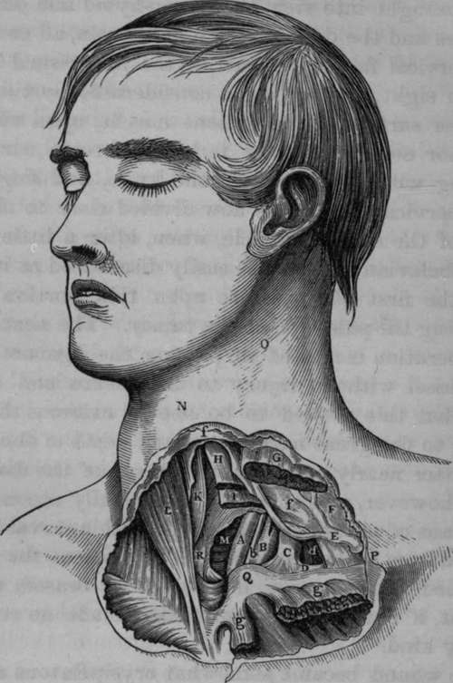

Operation Of Tying The Left Subclavian Artery In Its First Stage
Description
This section is from the book "Anatomy Of The Arteries Of The Human Body", by John Hatch Power. Also available from Amazon: Anatomy of the Arteries of the Human Body, with the Descriptive Anatomy of the Heart.
Operation Of Tying The Left Subclavian Artery In Its First Stage
It has heretofore been generally considered impracticable to tie the left subclavian artery in its first stage, for the following weighty reasons:—it extends for a very short distance indeed above the first rib, and then makes a short turn; it is, moreover, covered in front in this situation by the subclavian vein and phrenic nerve. Its deep situation, and almost vertical direction, its parallelism to the carotid artery and pneumogastric nerve, and its intimate connection with the thoracic duct and pleura, present a complication of unusual difficulties. Velpeau, however, seems to have a different opinion, for, after enumerating the differences between the two subclavian arteries in their first stage, he observes, " It is important to note all these differences, as they show us that it would be much less dangerous to apply a ligature here than on the right side, because, being placed at a greater distance from the origin of the vessel, the adhesive clot would form without difficulty. It would likewise be easier in its execution, for the nerves do not cross it as on the right, but descend parallel to its direction into the chest, and might be readily separated. Nevertheless, it must be admitted that almost all these advantages are counterbalanced by the greater depth, and almost vertical direction, of the artery. It must be remembered also that the pleura is more intimately related to the first stage of the left subclavian than at the right side, a circumstance which materially adds to the danger of this operations and to the difficulties in isolating the artery".
The left subclavian artery in its first stage was tied in the living individual by Dr. Rodgers, of New York. " The patient was a man, aged forty-two, who, in consequence of lifting a heavy weight upwards of a month previously, suddenly became the subject of aneurism of the left subclavian artery. The operations was performed on the 14th of October, 1845. Two incisions were made; one, three inches and a half in length, along the inner border of the sterno-cleido-mastoid muscle, terminating at the sternum, and dividing the integuments and platysma-myoid muscle; and the other, two inches and a half in length, extending horizontally over the inner extremity of the clavicle, the two meeting at a right angle near the trachea. Several small veins having been ligated, and the flap thus formed dissected up, the sternal portion with half of the clavicular of the mastoid muscle was divided upon a grooved director, a procedure which fully brought into view the sterno-hyoid and omo-hyoid muscles and the deep-seated jugular vein, all covered by the cervical fascia. A part of the aneurismal sac was also in sight, overlapping a considerable portion of the anterior surface of the scalene muscle, upon which the operator could distinctly feel the phrenic nerve. By digging with the handle of the knife, and fingers, the deep cervical fascia was now divided close to the inner edge of the scalene muscle, when, after a little search, the subclavian artery was easily discovered as it passed over the first rib, pressure upon this portion readily arresting the pulsation of the tumor. The next step of the operation consisted in passing the ligature around the vessel without injury to the pleura and thoracic duct, but this proved to be one of extreme difficulty, owing to the great narrowness and depth of the wound, the latter nearly equalling the length of the forefinger. This, however, was at length successfully accomplished, by means of an aneurismal needle with a movable point, carried from below upwards. The moment the ligature was tied, all pulsation in the tumor ceased, and the patient, if not entirely comfortable, made no complaint of any kind.
Fig. 19. Some of the relations of the Left Carotid and Left Subclavian Arteries in the cervical portion of their first stage.
A, Left Common Carotid Artery. B. Left Subclavian Artery. C, Internal Jugular about to join D, the Left Subclavian Vein;—the Jugular and Subclavian Veins displaced outwards. E, Anterior Jugular Vein in its course behind the Sterno-mastoid Muscle. F, Deep Cervical Fascia. G, Left Sterno-mastoid Muscle divided and separated from g, g, its Sternal and Clavicular origins. H, Left Sterno-hyoid Muscle cut. I, Left Sterno-thyroid Muscle cut. K, Right Sternohyoid Muscle. L, Right Sterno-mastoid Muscle. M, Trachea. N. Projection of the Thyroid Cartilage. O, Hollow, internal to Sterno-mastoid Muscle. P. Situation where the Subclavian Artery passes behind the Clavicle. Q, Sternal end of Left Clavicle. R, Right Sterno-thyroid Muscle, b, Left Pneumogastric Nerve, d. Left Anterior Scalenus Muscle, f, f, Layers of the Cervical Fascia.
The wound became somewhat erysipelatous after the operations, but, on the whole, the patient got on well until the 26th of October, when, on changing his position in bed, hemorrhage supervened, and, continuing to recur at various intervals, destroyed him on the fifteenth day. On dissection, the wound was found to be filled with clotted blood, beneath which the artery had been completely divided by the ligature, which lay loose close by. The stump of the subclavian, between the aorta and the point of ligation, was about an inch and a quarter in length, and thoroughly impervious to air and liquids, its calibre being occupied by a solid and firmly adherent coagulum. The distal extremity of the subclavian contained a soft imperfect clot, while the vertebral artery which was given off immediately at the site of the ligature, was almost patulous, and had evidently been the seat of the hemorrhage which caused the patient's death. The aneurismal sac, the size of a small orange, was completely blocked up with coagula: the thoracic duct was uninjured, but the pleura at the bottom of the wound was found to be extensively lacerated, and through the opening thus formed a large quantity of blood had passed into the left cavity of the chest.*
* Gross's System of Surgery, vol. i. p. 909.
Continue to:
- prev: Mr. O'Reilly's Case
- Table of Contents
- next: Operation Of Tying The Subclavian Artery In Its Second Stage